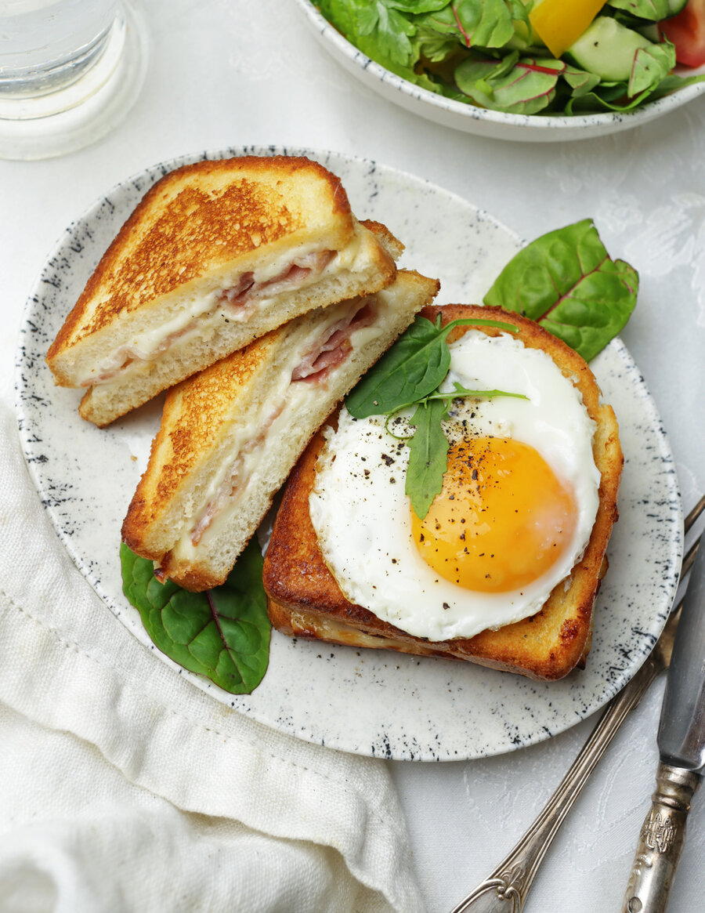

Французская версия сэндвичей с сыром и ветчиной или ломтиками окорока, имеющая несколько вариантов приготовления. Чаще всего в качестве основы используют бриошь в виде тостового хлеба, лучше подойдет для этого вчерашний, чуть подсохший хлеб.
Существуют варианты приготовления с классическим соусом морнэ на яичных желтках и с сыром, с соусом бешамель, с горчичным соусом или в виде сэндвичей, обжаренных в смеси сливок и яиц.
Чем отличается крок-мадам от крок-месье? Лишь тем, что «мадам» подают со «шляпкой» из поджаренного яйца, а крок-месье — без.